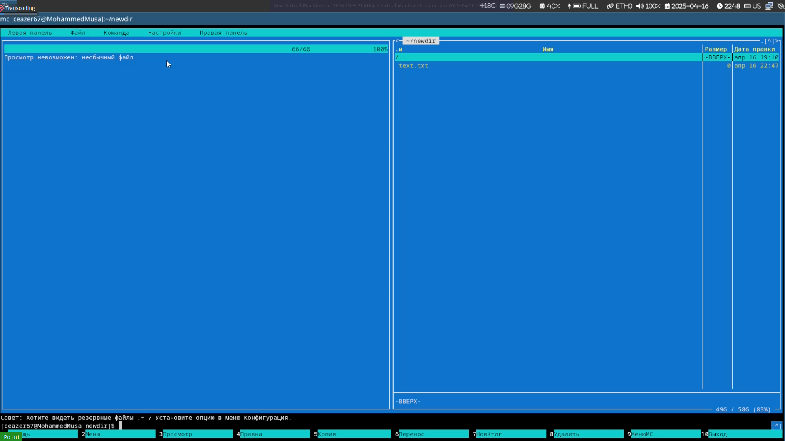
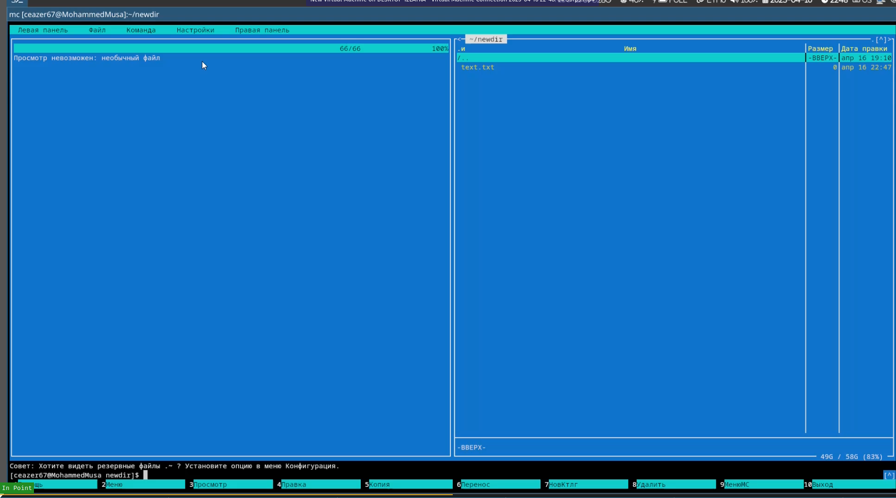

Цель работы
Изучение возможностей Midnight Commander (mc) для работы с файлами,
каталогами и встроенным редактором.
Задание
Изучение Midnight Commander через man
Исследование интерфейса mc
Операции с файлами в mc
Использование меню панелей
Работа с подменю “Файл”
Использование подменю “Команда”
Настройки mc
Работа с встроенным редактором mc
Изучение Midnight Commander
Изучение mc через man
Запуск mc и исследование
интерфейса
Структура: две панели, строка меню, командная строка
Меню: File, Command, Options, Right, Left, Info, Help

lab9-1
Операции в mc
Управление панелями
F9 → Left/Right → List →
смена каталогаВыделение файлов: Insert (для выделения),
F5 (копирование), F6 (перемещение)
Информация о файлах: F10 → Info →
File → Properties
lab9-2
Использование меню панелей
Операции с файлами
Копирование файлов между панелями через F5
Просмотр подробной информации: F10 → View
→ Long format
Подменю “Файл”
Операции с файлами
Просмотр содержимого: F3 (View)
Редактирование: F4 (Edit) → внесение изменений без
сохранения
Создание каталога: F7 → ввод имени
Копирование файлов в новый каталог: выделение → F5 →
выбор целевого каталога
Подменю “Команда”
Поиск и выполнение команд
Поиск файла с main в .c/.cpp:
F9 → Command → Find file →
параметры: *.c и содержимое main
Повтор команды: F9 → Command →
History
Переход в домашний каталог: F9 → Command →
Go to → Home
Анализ файлов меню: F9 → Command →
Edit extension file

lab9-3
Настройки mc
Интерфейс и отображение
Режимы отображения: F9 → Options →
Layout → Full screen, Double width
Отображение скрытых файлов: F9 → Options →
Panel → Show hidden files
Встроенный редактор mc
Создание и редактирование
файлов
Создание файла:
mc F9 → File → New file → text.txtРедактирование через mc:
Вставка текста: Ctrl+Ins (копирование из другого
файла)
Удаление строки: Ctrl+Y
Выделение фрагмента: F3 (начало выделения) →
F3 (окончание) → F5 (копирование) или
F6 (перемещение)
Сохранение: F2
Отмена: Ctrl+U
Навигация: Alt+End (в конец файла),
Alt+Home (в начало)
lab9-4
Подсветка синтаксиса
Работа с кодом
Открытие файла .c/.java: F4 →
выбор файла
Включение/выключение: F9 → Options →
Syntax highlighting
Выводы
В ходе работы освоены: - Навигация и управление файлами в mc - Поиск
файлов с условиями через Find file - Редактирование текста
и кода с подсветкой синтаксиса - Настройка интерфейса mc под задачи
пользователя
Контрольные вопросы
1. Режимы mc
Shell-режим : Основной интерфейс с двумя панелями
для навигации по файловой системе, строкой меню и командной строкойРедактор : Активируется через F4,
поддерживает синтаксис подсветку, поиск/замена, отмену изменений
(Ctrl+U)Просмотр : Активируется через F3,
позволяет читать содержимое файлов без редактирования, поддерживает
поиск (F7)
2. Операции с файлами
Копирование : В mc F5, в shell
cp source destinationПеремещение : В mc F6, в shell
mv source destinationУдаление : В mc F8, в shell
rm file или rm -r directory
3. Меню панели mc
Left/Right: Переключение между панелямиInfo: Отображение метаданных файлаHelp: Справка по горячим клавишамList: Список файлов с фильтрациейNew: Создание новых файлов/каталогов